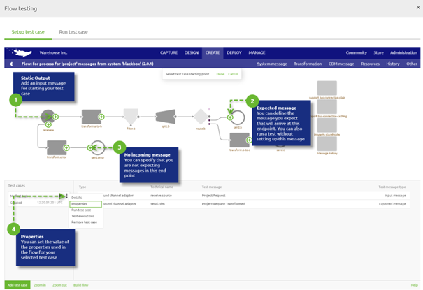

microlearning/crashcourse-platform-create-understanding-flowtesting
Intro
Understanding Flow Testing
In this microlearning, we will focus on the positioning of Flow Testing in the eMagiz platform. Should you have any questions, please contact academy@emagiz.com.
- Last update: Juli 7th, 2021
- Required reading time: 2 minutes
1. Pre-requisites
- Basic knowledge of the eMagiz platform
- Understand the concept of Unit Testing
2. Key concepts
Unit testing refers to the idea that units of developed code, or in this case integration flows/components, are tested against fit for use. Often these unit tests are run automatically to verify each component, but in this case, the unit test is also supporting the actual development of an eMagiz flows. As we work with flows in eMagiz we call it Flot testing. Flow tests are always combined with specific pieces of elements that make the unit operational, such as test data, test messages, or access to services that produce data. Sometimes specific mock services are used to simulate real-time behavior.
Theory
3. Creating Flow tests in eMagiz
Flow tests in eMagiz are created in the Create phase while developing your flow. The key reason is that this will allow the eMagiz developer to validate the correct function of the flow without the need to deploy.
- It will speed up the development of the flow itself
- The flow test allows having a better reference for other team members how the flow should behave
- The flow test can help to validate the entire integration flow during User Acceptance Testing
- During issue resolution, the flow test can be reused with the attached test messages to pinpoint issues.
Configuring the right test messages to validate the flow is key in eMagiz. These test messages allow representing the specific user scenario's that the business has provided for validation.

More on the specifics of flow testing in the following microlearnings.
Practice
4. Assignment
There is no specific assignment for this Microlearning
5. Key takeaways
Flow tests are a powerful way in which flows components can be tested without the specific need to deploy them on the eMagiz runtimes using releases and deployment plans. Individual behavior can be tested and verified, without the need to run expensive debug components inside the actual flow. It is recommended to maximize the use of flow tests during the development of (new) flows so that development can be done quicker against a higher standard.
Solution
6. Suggested additional readings
7. Silent demonstration video
There is no specific demonstration video for this Microlearning